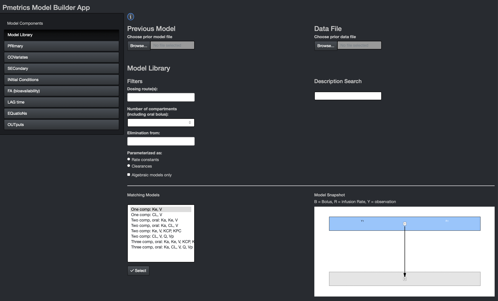
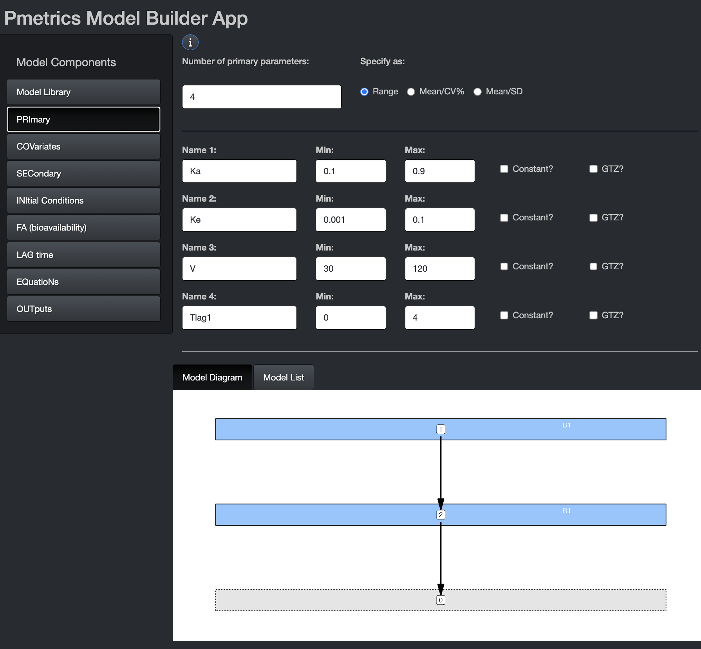
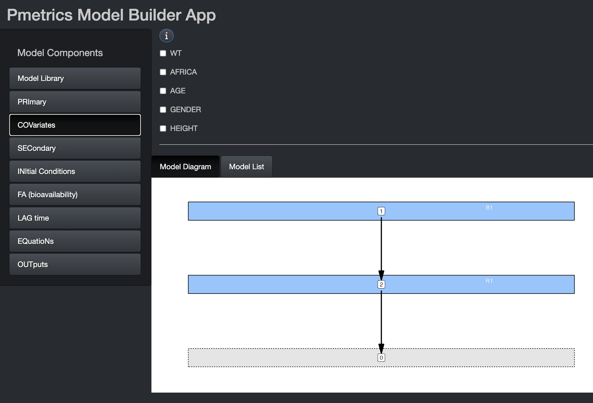
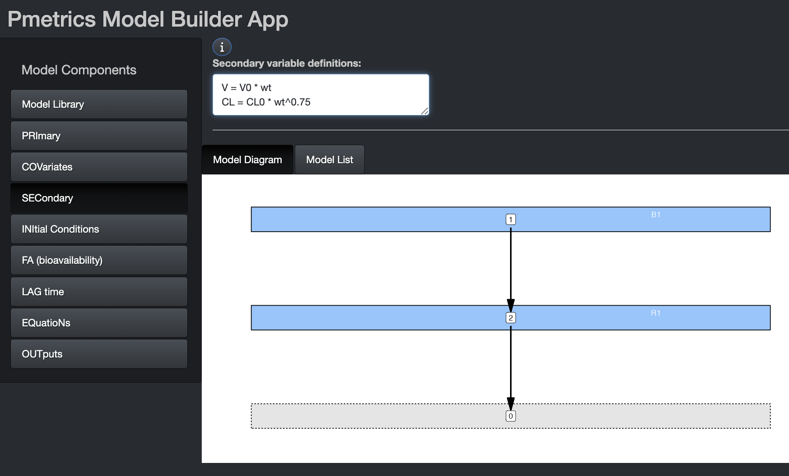
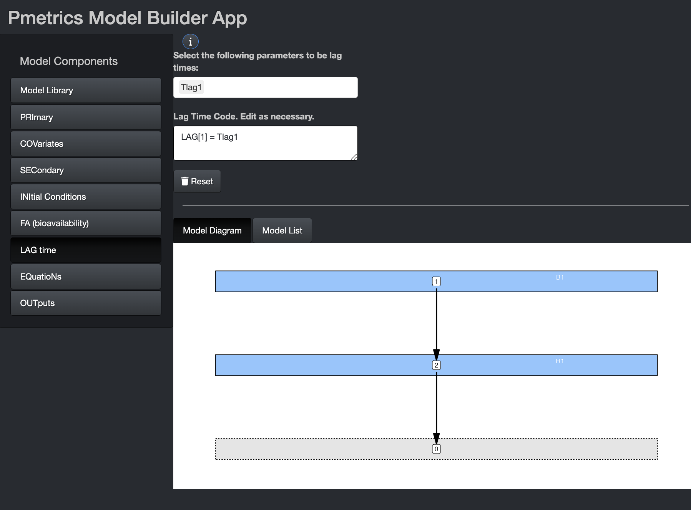
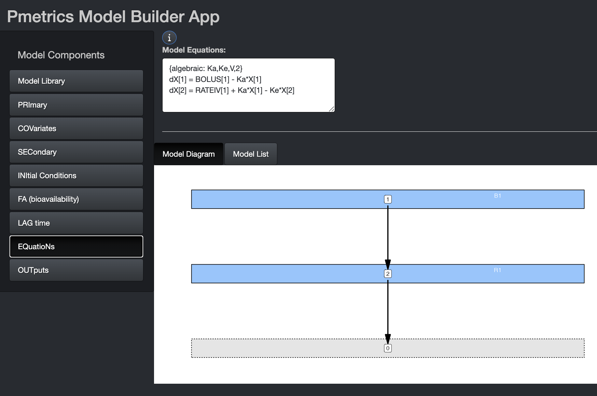
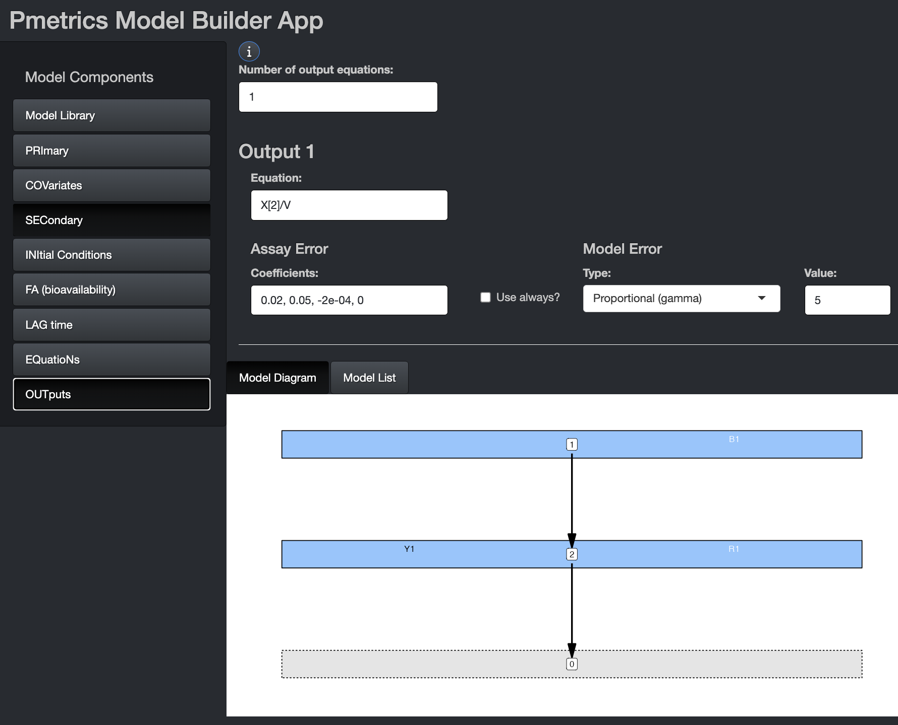
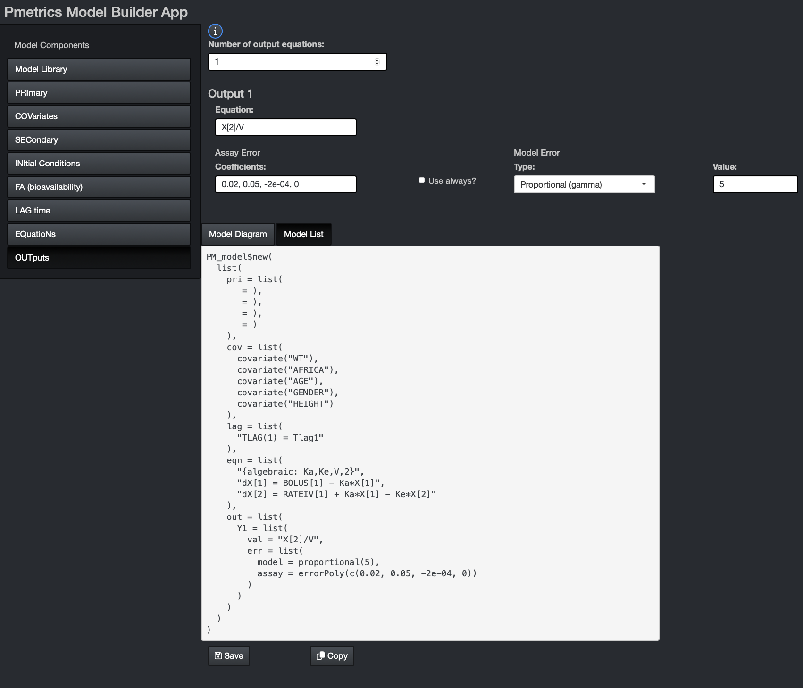

Creating Models
There are three pathways to creating models in Pmetrics.
- Use the Pmetrics Model Builder app
- Write a model list in R
- Load an existing model text file
Each of these use sections to define the model. In the app, the sections correspond to tabs. In the list, they are named elements. In the model file, they are code blocks delimited by “#” and the name of the block. The sections are largely the same across the three model pathways, and we’ll cover the details in this document.
Model Builder App
To launch the app, type the following into your console:
build_model(). You can supply a PM_data and/or
a PM_model as optional arguments to the function,
e.g. build_model(NPex$data) or
build_model(NPex$model) or even
build_model(NPex$data, NPex$model). The order of data
and/or model arguments doesn’t matter. Pmetrics can figure out which is
which.
Model List
You can write a Pmetrics model list in R. Blocks in the model files
which were delimited with the “#” character become lists in R6. You can
also generate a model in the app and copy it as a list to R which can be
used in PM_model$new(copied_list). Once in R,
PM_model list objects can be updated using the
$update() method.
Model Files
The format of the .txt model file has been unchanged since Pmetrics
0.4. You can write the file by hand, or use the app to create a model
and then save it to a file. Once you have a file, it can be loaded in to
R with PM_model$new("file").
mod1 <- PM_model$new("model.txt")
#assumes model.txt is in working directory
#check with list.files() and/or getwd()Saved models are only text files. You can write files directly yourself, although it is easier and more stable to use the model building app. We will review the format of the files in detail. In either R6 or Legacy Pmetrics, models are ultimately translated into Fortran text files with a header version of TSMULT...
Naming your model files. The default model file name
is “model.txt,” but you can call them whatever you wish. However,
please keep the number of characters in the model file name ≤
8. When you use a model file in a $run() method,
at the end of the run, your original model file will be left where it
is, but a copy called “genmodel.txt” will be in the /inputs subfolder of
the run folder, and a “genmodel.for” Fortran model file will be in the
/etc subfolder of the run folder.
Structure of model files. The model file is a text file with up to 10 blocks, each marked by "#" followed by a header tag. For each header, only the capital letters are required for recognition by Pmetrics. The blocks can be in any order, and header names are case-insensitive (i.e. the capitalization here is just to show which letters are required). Fortran is also case-insensitive, so in variable names and expressions case is ignored. We include a complete example.
Important: Sometimes it is important to preserve spacing and formatting in Fortran code that you might insert into blocks, particularly the #EXTRA block. If you wish to do this, insert [format] and [/format] before and after any code that you wish to reproduce verbatim with spacing in the fortran model file.
Comments: You can insert comments into your model text file by starting a line with a capital “C” followed by a space. These lines will be removed/ignored in the final Fortran code.
Model Sections
The model building app has a unique Model library section not found in model files or lists.
Sections common to all the model building pathways include the following:
- PRImary variables
- COVariates
- SECcondary variables
- INItial conditions
- Fa (bioavailability)
- LAG time
- EQuatioNs
- OUTputs
Lastly, sections which are specific to model files:
Model Library

Here you can choose from pre-existing models, either which you have created yourself and load with the Previous Model dialogue, or from the Pmetrics Model Library. Use the filters and description search to help select the model you want. Matching models will update in the box at the bottom. If you select one, you’ll see a model snapshot on the right.
In the snapshots, B is for bolus inputs, R is for Rate infusions (e.g. intravenous infusions), and Y is for observations. Arrows indicate the flow of drug. The grey compartment 0 is the environment.
Once you choose a model, hit the “Select” button at the bottom to populate remaining model components. Similarly, if you load a Previous Model, model components will be appropriately populated.
PRImary
App

In this tab, you can choose the number and names of the primary parameters. Variable names should be 11 characters or fewer. Some variable names are reserved for use by Pmetrics and cannot be used as primary variable names. The number of primary variables must be between 2 and 32, with at most 30 random or 20 fixed.
These are the parameters for which value probability distributions will be estimated. You can specify initial values as ranges or mean/SD. The mean is the mid point of a range and the SD is 1/6 of the range, i.e. 3 SD above and below the mean. If you omit the second value for a parameter (Max or SD), the parameter will become “fixed”, i.e. unknown value but zero variance in the population. In other words Pmetrics will estimate the value but make it the same for the whole population. The value you provide will be the starting estimate. If you check the constant option, it will fix the parameter to your value for every subject and not estimate. The GTZ option keeps the parameter positive, which is only relevant for parametric analysis, since nonparametric will respect parameter ranges strictly.
In the bottom you see the Model Diagram and the Model List. These dynamically build as you complete the Model Components.
List
Primary variables are a list named “pri”, comprising named elements which are the parameters, and the function to define the parameter, one parameter to a line.
The two defining function are ab and msd.
Choose one for each parameter. The first defines the absolute search
space for that parameter for NPAG/NPOD, i.e., the range. For IT2B/RPEM,
it defines the mean of the prior as the midpoint of the range, and the
range covers 6 standard deviations, e.g. ±3 SD above and below the mean,
or 99.7% of the prior distribution. msd is the companion
function that specifies a mean and SD in IT2B and RPEM. For NPAG/NPOD,
it will be converted in to a range in the reverse fashion as described
for ab. For both specifying functions, gtz is
an argument to force the parameter value to be positive,
i.e. gtz=T, which is the default. To allow negative
parameters, set gtz=F.
File
Primary variables are a list of variable names, one name to a line. On each line, following the variable name, is the range for the parameter that defines the search space. These ranges behave slightly differently for NPAG, IT2B, and the simulator.
For all engines, the format of the limits is min, max. A single value will indicate that the parameter is to be fixed but unknown in the population, i.e. the value is taken as the starting point for the optimization, but the final value will depend on the model and data and will be the same across the population. A single value followed by an “!” will indicate that this value is to be held constant (i.e. fixed and known) across the population, and not to be estimated.
For NPAG, when min, max limits are specified, they are absolute, i.e. the algorithm will not search outside this range.
For IT2B, the range defines the Bayesian prior distribution of the parameter values for cycle 1. For each parameter, the mean of the Bayesian prior distribution is taken as the middle of the range, and the standard deviation is xsig*range (see IT2B runs). Adding a plus sign (+) to a line will prevent that parameter from being assigned negative values. NPAG and the simulator will ignore the pluses as the ranges are absolute for these engines. Note that prior to version 1.5.0, this used to be an exclamation point (!) but to be consistent throughout the model file, the exclamation point is now used when fixed values are desired.
The simulator will ignore the ranges with the default value of NULL for the limits argument. If the simulator limits argument is set to NA, which will mean that these ranges will be used as the limits to truncate the simulation (see Simulator Runs).
#Pri
KE, +0, 5
V, 0.01, 100
KA, 0, 5
KCP, 5
KPC, 0 , 5
Tlag1, 0, 2
IC3, 0, 10000
FA1, 0.5!
COVariates
Covariates are subject-specific data, such as body weight, contained in the data .csv file. The covariate names, which are the column names in the data file, must be declared, even if not used in the model object. Once declared, they can be used in secondary variable and differential equations. The order and names should be the same as in the data file.
Covariates are applied at each dose event. The first dose event for each subject must have a value for every covariate in the data file. To change a covariate value at a time other than a dose, enter a dose event with dose amount of zero.
By default, missing covariate values for subsequent dose events are linearly interpolated between existing values, or carried forward if the first value is the only non-missing entry. However, you can suppress interpolation and carry forward the previous value in a piece-wise constant fashion, depending on the way you define the model as described below.
App

If you launch the Model Builder with a PM_data object as
an argument, the covariate tab will be pre-populated with the covariates
in the data file, as above. The same is true if you include a
PM_model object as an argument to
build_model(). If you include both, the covariates in the
PM_data object will take precedence. You can select any of
them to make them piece-wise constant, i.e. the value is held constant
between measurements. If left unchecked, covariate values will be
linearly interpolated between measurements.
List
Covariates are a list of objects returned by the
covariate() function. The first argument for the function
is the quoted name of the covariate, and the second argument is
constant, which is FALSE by by default. This
means that missing covariate values for subsequent dose events are
linearly interpolated between existing values, or carried forward if the
first value is the only non-missing entry. Set this argument to
TRUE to make a covariate piece-wise constant.
File
List the covariates by name, one per line in the #COV block. To make a covariate piece-wise constant, include an exclamation point (!) in the declaration line.
Note that any covariate relationship to any parameter may be described as the user wishes by mathematical equations and Fortran code, allowing for exploration of complex, non-linear, time-dependent, and/or conditional relationships. This is accomplished in the #Sec block.
Example:
#Cov
wt
cyp
IC!
where IC will be piece-wise constant and the other two will be linearly interpolated for missing values.
Secondary
Secondary variables are those that are defined by equations that are combinations of primary, covariates, and other secondary variables. Pmetrics does NOT generate distributions for the values of secondary variables. They are only used internally to define the model.
App

If using secondary variables, define them first within this tab. Equation syntax for Secondary equations must be Fortran. It is permissible to have conditional statements, but because expressions in this block are translated into variable declarations, expressions other than of the form “X = function(Y)” must be on a new line, prefixed by “&” and contain only variables which have been previously defined in the Primary, Covariate, or Secondary blocks.
The image shows examples of secondary variable declarations without conditions. Here are two examples of conditional secondary variables chosen on the basis of sex. The primary variables are Vm, Vf, CLm, and CLf.
V = Vm
&IF(sex == 1) V = Vf
V = Vm
CL = CLm
&IF(sex == 1) THEN
V = Vf
CL = CLF
ENDIFList
Specify each variable equation as a character vector in the same way as for the app. In the example below, V0 is the primary parameter which will be estimated, but internally, the model uses V as V0*wt, unless age is >18, in which case weight is capped at 75 kg. It’s the same for CL0. Note that the conditional statement is not named.
INItial conditions
By default, all model compartments have zero amounts at time 0. However, you can change the default initial condition of any compartment from 0 to something else. It can be an equation, primary or secondary variable, or covariate.
App
We’ll discuss more about the interface in the section on lag times.
List
Initial conditions can be changed using a character vector named “ini”. Each line of the vector specifies the compartment amount as “X[.] = expression”, where “.” is the compartment number. Primary and secondary variables and covariates may be used in the expression, as can conditional statements in Fortran code. An “&” continuation prefix is not necessary in this block for any statement, although if present, will be ignored.
mod <- PM_model$new(
list(
pri = list(
Ke = ab(0, 5),
V = msd(100, 30),
IC3 = ab(0, 1000)
),
cov = list(
covariate("wt"),
covariate("age"),
covariate("IC2")
),
ini = c(
"X[1] = IC2*V",
"X[3] = IC3"
)
)
)In the example above, IC is a covariate with the measured trough concentration prior to an observed dose and IC3 is a fitted primary parameter specifying an initial amount in unobserved compartment 3.
In the first case, the initial condition for compartment 2 becomes
the value of the IC covariate (defined in cov list)
multiplied by the current estimate of V during each iteration. This is
useful when a subject has been taking a drug as an outpatient, and comes
in to the lab for PK sampling, with measurement of a concentration
immediately prior to a witnessed dose, which is in turn followed by more
sampling. In this case, IC or any other covariate can be set to the
initial measured concentration, and if V is the volume of compartment 2,
the initial condition (amount) in compartment 2 will now be set to the
measured concentration of drug multiplied by the estimated volume for
each iteration until convergence.
In the second case, the initial condition for compartment 3 becomes
another variable, IC3 defined in the pri list, to fit in
the model, given the observed data.
FA (bioavailability)
In this tab you can change the default bioavailability of any bolus input from 1 to something else. It can be an equation, primary or secondary variable, or covariate.
App
We’ll discuss more about the interface in the section on lag times.
List
Bioavailability for any bolus input can be changed from the default value of 1. Use a character vector named “fa” where each line is of the form “FA[.] = expression”, and “.” is the input number. Primary and secondary variables and covariates may be used in the expression, as can conditional statements in Fortran code. An “&” continuation prefix is not necessary in this block for any statement, although if present, will be ignored.
LAG time
The lag time is a delay in absorption for a bolus input.
App

You can change the default delay in absorption of any bolus input from 0 to something else. It can be an equation, primary or secondary variable, or covariate. If you wish to use any of the latter three, select them from the drop down and the equation will pre-populate, as shown in the image. You can edit the equation or write your own equation. This is true for initial conditions and bioavailability in their tabs.
List
Use a character vector named “lag” where each element of the vector is of the form “LAG[.] = expression”, where “.” is the input number. Primary and secondary variables and covariates may be used in the expression, as can conditional statements in Fortran code. An “&” continuation prefix is not necessary in this block for any statement, although if present, will be ignored.
EQuatioNs
These are the equations that define the structural model, i.e., the mathematical expressions that relate input (dose) to output (measurements). Pmetrics has a library of models with algebraic solutions and models can also use differential equations in a format compatible with R. Even algebraic models will contain differential equations for purposes of understanding and plotting the model, but algebraic models from the library include a token which tells Pmetrics how to choose the correct model. Details below.
App

If you have not loaded a prior model file or selected a model from the library, you can write the differential equations here. There can be a maximum of 20 such equations. The model diagram will update as information in the equations becomes available.
Use dX[i] for change in compartment amounts, where i is
the compartment number, e.g. dX[1] or dX[2]. Compartment amounts are
referred to as X[i], e.g. X[1] or X[2]. Use
BOLUS[j] for bolus input j and RATEIV[k] for
infusion k. The indeces j and k correspond to the INPUT column in the
data file, which is usually omitted and assumed to be 1 for all doses.
These can be abbreviated as “BOL[j]” or “B[j]”, for a bolus or “R[k]”
for an infusion. The duration of the infusion and total dose is defined
in the data.csv file. Up to 7 inputs are currently
allowed. The DUR column in the data file determines
whether a dose is treated as a BOLUS (DUR = 0) or RATEIV (DUR > 0).
Any variable defined in PRI, COV, or SEC may be used in your
equations.
If you build an algebraic model in the app by choosing it from the model library and save the file, it will contain an #EQN block, with a token to indicate that the model will be solved algebraically. The differential equations in this case are included only for information purposes and to enable plotting of the model. The format of the algebraic token is four comma-separated arrays, each surrounded by “[]” and named “P” for parameters in alpha order, “B” for bolus input compartments, “R” for rate (IV) input compartments, and “O” for output compartments. For example, “{algebraic: P[Ka,Ke,V], B[1], R[2], O[2]}” or “{algebraic: P[Ke,KCP,KPC,V], B[0], R[1], O[1]}”. UpdateEventually the tokens will also recognize model names familiar to many pharmacometricians such as {algebraic: ADVAN1 TRANS1} for {algebraic: P[Ke,V], B[0], R[1], O[1]}.
Note: If you change the equations of an algebraic
model loaded from the library, you will receive a warning in the app
that you are forcing use of ODE solvers, and your model list (and file)
will no longer have the algebraic token. Beware also of changing the
parameter names, as the algebraic models must use specifically named
parameters. However, it is perfectly acceptable to add parameters,or
even change primary parameters as long as the original appear in the
secondary block. For example, if you wish to make volume dependent on
weight, change V in the Primary section to something like
V0 with appropriate range or mean/SD, and add
V = V0 * wt to your Secondary section, assuming you have a
covariate named “wt”. Because V is still defined, Pmetrics
will know how to solve the algebraic model.
List
Specify a model as a character vector named “eqn” with each element an ordinary differential equation in the same R format as for the app. Additional equations can be included.
File
This block was formerly called “#DIF”, and Pmetrics will recognize this header, but we encourage you to adopt the more general #EQN block name.
Example:
#EQN
ktotal = Ke + KCP
dX[1] = BOLUS[1] -KA*X[1]
dX[2] = RATEIV[1] + KA*X[1] - (ktotal)*X[2] + KPC*X[3]
dX[3] = KCP*X[2] - KPC*X[3]
Pmetrics will still recognize the old Fortran format of XP(1), which is dX[1], and X(1), which is X[1], but please transition to the new format to be more compatible with R and eventual transition away from Fortran.
Outputs
The outputs in Pmetrics are the values in the OUT column of
the data that you are trying to predict. In the model objects, each
output is referred to as Y[.], where “.” is the number of
the output and the same as the corresponding OUTEQ in the data.
Outputs can be defined as mathematical combinations of compartment
amounts (X[.]), primary and/or secondary parameters, or
covariates.
Output equations are in R format. However, if they include
conditional statements, these should follow Fortran conventions,
e.g. with IF() and ENDIF rather than R’s
if(){} convention. An “&” continuation prefix is not
necessary in this block for any statement, although if present, will be
ignored. There can be a maximum of 6 outputs.
Because outputs are measurements, they have an associated error in that measurement. Pmetrics takes this into account by partitioning model residual prediction error into a fixed portion defined by the assay error, which may be inflated by an additive model error component \(\lambda\) or a proportional component \(\gamma\), which reflect additional noise and model misspecification. The remaining error is random.
In the app and list, the error is defined with each output. In the file, the error block is distinct from but correlates with the output block.
App

On this tab, you can choose the number of output equations and define the equation for each output. You do not need to specify “Y[.] =” in the equations. Simply include the right side of the equation in the field.
Include the Assay Error polynomial coefficients for
each output equation. The four coefficients estimate SD according to the
folowing equation: \(C0 + C1 * [obs] + C2 *
[obs]^2 + C3 * [obs]^3\) and \([obs]\) is the observation. The values for
the coefficients should ideally come from the analytic lab in the form
of inter-run standard deviations or coefficients of variation at
standard concentrations. You can use the Pmetrics function
makeErrorPoly() to choose the best set of coefficients that
fit the data from the laboratory. Alternatively, you can use a generic
set of coefficients. We recommend that as a start, \(C0\) be set to half of the lowest
concentration in the dataset and \(C1\)
be set to 0.1. \(C2\) and \(C3\) can be 0.
If you check the Use Always? box, the model coefficients will be used regardless of what is in the data file. Leaving it unchecked, which is the default, means that coefficients in the data file will be used if present, and the ones here in the model definition will be used only if none are available for an observation in the data.
Choose your Model Error model from the drop down. The additive \(\lambda\) and proportional \(\gamma\) models both have fixed options. If not fixed, the parameter will be estimated, starting from the number in the Value field. If fixed, it will be held constant at the number in the Value field.
The proportional model weights each observation by \(1/(\gamma * SD)^2\), where \(\gamma\) is either fixed or estimated. The additive model weights each observation by \(1/(\lambda + SD)^2\), where \(\lambda\) is either fixed or estimated. The combination model uses \(1/((\gamma * SD)^2 + (\lambda + SD)^2)\).
In the proportional model, \(\gamma\) is a scalar on assay SD. In general, well-designed and executed studies and models with low mis-specification will have data with \(\gamma\) values approaching 1. Values <1 suggest over-inflated assay noise. Poor quality, noisy data will result in \(\gamma\) of 5 or more. A good starting value for \(\gamma\) is usually 5, and sometimes 10 early in model development if data are particularly complex or noisy.
In the additive model, \(\lambda\) is additive to assay SD. In general, well-designed and executed studies and models with low mis-specification will have data with \(\lambda\) values approaching 0. Values of 0 may suggest over inflated assay noise. Poor quality, noisy data will result in \(\lambda\) of \(5*C0\) or more. A good starting value for \(\lambda\) is usually \(3*C0\). Note, that \(C0\) should generally not be 0, as it represents machine noise (e.g. HPLC or mass spectrometer) that is always present.
List
The out list is a series of nested lists. The outer list
defines all the outputs. The next level defines each output equation,
named as Y1, Y2, etc. Within the equation list
is the equation and the error model. Within the error model for that
output, is the last list comprising model and assay error
specifications. In the examples below, we build this nested list
structure gradually to make it more clear.
The output equation is a character vector named “val” followed by an error list.
The error model for an output equation has two elements. The first is
the model error, which can be one of two functions:
proportional for \(\gamma\) or additive for \(\lambda\). The arguments to these functions
are a number and optionally fixed, which defaults to
FALSE. If fixed is FALSE, the
number serves as the starting estimate for the model error. If
fixed is TRUE, the number serves as the model
error, with no estimation. Note that you can only fix the additive model
currently to zero.
The second element is the assay error model. It is a
function errorPoly(coeffs, constant = FALSE). The first
argument coeff is the vector of 4 numbers that defines a
polynomial equation to permit calculation of the standard deviation of
an observation, based on the noise of the assay. The second argument
constant is FALSE by default, which means that
coefficients in the data file will be used if present, and the ones here
in the model definition will be used only if none are available for an
observation in the data. If constant = TRUE, the model
coefficients will be used regardless of what is in the data file.
out = list(
Y1 = list(
val = "X(1)/V",
err = list(
model = proportional(1),
assay = errorPoly(c(0.15, 0.1, 0, 0))
)
)
)out = list(
Y1 = list(
val = "X(1)/V",
err = list(
model = additive(1, fixed = TRUE)
assay = errorPoly(c(0.05, 0.1, 0, 0), constant = TRUE)
)
)
)More complete examples.
mod <- PM_model$new(
list(
pri = list(
Ke = ab(0, 5),
V = msd(100, 30),
),
out = list(
y1 = list(
val = "X(1)/V",
err = list(
model = proportional(5),
assay = errorPoly(c(0.05, 0.1, 0, 0))
)
)
)
)
)
mod2 <- PM_model$new(
list(
pri = list(
kin = ab(0, 5),
kout = ab(0, 5),
tpd = ab(0, 5),
V = msd(100, 30),
),
sec = c(
"RES = B(1) * KIN/(KIN-KOUT) * (EXP(-KOUT*TPD)-EXP(-KIN*TPD))"
),
out = list(
y1 = list(
val = "RES/V",
err = list(
model = combination(0.4, 3) #additive, proportional
assay = errorPoly(c(0.3, 0.15, 0, 0))
)
)
)
)
)This last example is known as the Bateman equation for a model with linear absorption (KIN) into and elimination (KOUT) from a central compartment, and a time post-dose (TPD) or lag time. Here B(1) is the oral bolus dosing vector for drug 1, and V is the volume of the central compartment.
File
Outputs are of the form Y[.] = expression, where "." is the output equation number. Primary and secondary variables and covariates may be used in the expression, as can conditional statements in Fortran code. An "&" continuation prefix is not necessary in this block for any statement, although if present, will be ignored. There can be a maximum of 6 outputs. They are referred to as Y[1], Y[2], etc. These equations may also define a model explicitly as a function of primary and secondary variables and covariates.
As mentioned previously, in the file method of model definition, assay and model error are defined in a separate #Err block.
Examples:
#Out
Y[1] = X[2]/V
Again, Pmetrics will recognize the older format Y(1), which is Y[1], but users are encouraged to adopt the newer format.
Here’s an example of an explicit model defined in the output and not the equation block.
#OUT
RES = BOLUS[1] * KIN/(KIN-KOUT) *
(EXP(-KOUT*TPD)-EXP(-KIN*TPD))
Y[1] = RES/VD
Error
App, List
The error section in the app and list forms of model definitions is included with the outputs.
File
Unlike the R6 model builder app or model list, the error block in the file is separated from the output block. This is to maintain backward compatibility with Legacy Pmetrics.
To specify the model in this block, the first line is either L=number or G=number for a \(\lambda\) or \(\gamma\) error model. The number is the starting value for \(\lambda\) or \(\gamma\). If you include an exclamation point (!) in the declaration, then \(\lambda\) or \(\gamma\) will be fixed and not estimated. Recall that you can only fix \(\lambda\) currently to zero.
The next line(s) contain the values for the assay error polynomial coefficients: \(C0\), \(C1\), \(C2\), and \(C3\), separated by commas. There should be one line of coefficients for each output equation. By default Pmetrics will use values for these coefficients found in the data file. If none are present or if the model declaration line contains an exclamation point (!) the values here will be used.
Example 1: estimated \(\lambda\), starting at 0.4, one output, use data file coefficients but if missing, use 0.1,0.1,0,0.
#Err
L=0.4
0.1,0.1,0,0
Example 2: fixed \(\gamma\) of 2, two outputs, use data file coefficients but if missing, use 0.1,0.1,0,0 for the first output, but use 0.3, 0.1, 0, 0 for output 2 regardless of what is in the data file.
#Err
G=2!
0.1,0.1,0,0
0.3,0.1,0,0!
Extra
File
This block is for advanced Fortran programmers only. <span class=“update>Update. Occasionally, for very complex models, additional Fortran subroutines are required. They can be placed here. The code must specify complete Fortran subroutines which can be called from other blocks with appropriate call functions. As stated earlier, sometimes it is important to preserve spacing and formatting in Fortran code that you might insert into blocks, particularly the #EXTRA block. If you wish to do this, insert [format] and [/format] in the fortran model file around the affected code.
Complete File Example
Here is a complete example of a model file, as of Pmetrics version 2.1 and higher:
#Pri
KE, 0, 5
V0, 0.1, 100
KA, 0, 5
Tlag1, 0, 3
#Cov
wt
C this weight is in kg
#Sec
V = V0*wt
#Lag
TLAG[1] = Tlag1
#Out
Y[1] = X[2]/V
#Err
L=0.4
0.1,0.1,0,0
Notes:
By omitting a #EQN block with ODEs, Pmetrics understands that you are specifying the model to be solved algebraically. In this case, at least KE and V must be in the Primary or Secondary variables. KA, KCP, and KPC are optional and specify absorption, and transfer to and from the central to a peripheral compartment, respectively.
As described above, if you build the same algebraic model in the app and save the file, it will contain an #EQN block, with a token to indicate that the model will be solved algebraically and differential equations only for information purposes and to enable plotting of the model.
The comment line “C this weight is in kg” will be ignored.
Saving and copying models from the app

The Model List tab in the bottom window of the app shows the List form of the model. You can see it develop as you complete components. Once the model is finished, you can use one or both of the buttons at the bottom to copy or save the model.
Choosing Copy will put the code in you clipboard and you can
paste it into R. It will include PM_model$new(...), so you
should add code such as mod1 <- to your R script, and
then paste. This will entirely define mod1 as a
PM_model equivalent to what you built in the app.
Choosing Save in the app will write a file named “model.txt” to your current working directory in R that contains all the code necessary to define the same model as you build in the app. Be aware that if there is another file named “model.txt” in your working directory, it will be overwritten.
While incomplete models can be copied, a model can only be saved when it is complete. It is necessary for you to at least open relevant components to ensure that all fields are finalized in the Model List before you can save it.
Updating models
App
You can update an existing model in one of two ways in the app:
- Pass the
PM_modelobject to the app as an argument tobuild_model(), for example,build_model(NPex$model). Then, edit the appropriate fields in the app. Save the model as a new model and/or copy it into R. Note that the app saves all models as “model.txt” so be sure not to overwrite your old model if you wish to keep it. - Load a previously saved model file using the dialog button in the app and proceed as for the first option above.
List
Because models are loaded as memory items in R6 Pmetrics, they can be
modified in R without having to edit text files. This function is
accessed via the $update() method for PM_model
objects.
All R6 objects are mini-environments, so direct copies of an R6 environment are in the same environment and changes to one will change them all. This means the following code will likely not work as intended.
mod2 <- mod1
mod2$update(...)When mod2 is updated, mod1 will update as they are
in the same environment. The way to create an independent copy of an R6
object, which does not share the same environment, is to use the
$clone() method available for all R6 objects.
mod2 <- mod1$clone()
mod2$update(...)Now changes to mod2 do not propagate to mod1.
To update a model, simply supply the list items you wish to change with the new values.
This example changes the range of Ke, deletes V, adds V0, and defines a new secondary relationship for V = V0 * wt.
File
The only way to update a model file is to edit the text file and load
it with PM_model$new(). The advantage is that it is quick
and relatively easy. The disadvantage is that you have to keep editing,
copying and pasting files, and unless your documentation in R or
elsewhere is good, you have no idea how you changed the model from run
to run. In contrast, by using the $update() method in R6,
you can see a written record of how the model evolved over the
project.
Reserved Names
The following cannot be used as primary, covariate, or secondary variable names. They can be used in equations, however.
| Reserved Variable | Function in Pmetrics |
|---|---|
| ndim | internal |
| t | time |
| x | array of compartment amounts |
| xp | array of first derivative of compartment amounts |
| rpar | internal |
| ipar | internal |
| p | array of primary parameters |
| r | input rates |
| b | input boluses |
| npl | internal |
| numeqt | output equation number |
| ndrug | input number |
| nadd | covariate number |
| rateiv | intravenous input for inputs when DUR>0 in data files |
| cv | covariate values array |
| n | number of compartments |
| nd | internal |
| ni | internal |
| nup | internal |
| nuic | internal |
| np | number of primary parameters |
| nbcomp | bolus compartment array |
| psym | names of primary parameters |
| fa | biovailability |
| tlag | lag time |
| tin | internal |
| tout | internal |
Brief Fortran Tutorial
Much more detailed help is available from https://fortran-lang.org/en/learn/quickstart/.
| Arithmetic Operator | Meaning |
|---|---|
| + | addition |
| - | subtraction |
| * | multiplication |
| / | division |
| ** | exponentiation |
| Relational Operator | Alternative | Meaning |
| < | .LT. | less than |
| <= | .LE. | less than or equal |
| > | .GT. | greater than |
| >= | .GE. | greater than or equal |
| == | .EQ. | equal |
| /= | .NE. | not equal |
| Selective Execution | Example |
| IF (logical-expression) one-statement | IF (T >= 100) CL = 10 |
|
IF (logical-expression) THEN statements END IF |
IF (T >= 100) THEN CL = 10 V = 10 END IF |
|
IF (logical-expression) THEN statements-1 ELSE statements-2 END IF |
IF (T >= 100) THEN CL = 10 ELSE CL = CL END IF |